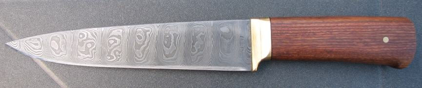
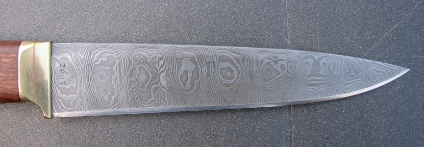
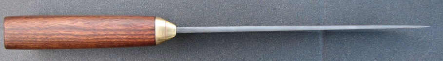
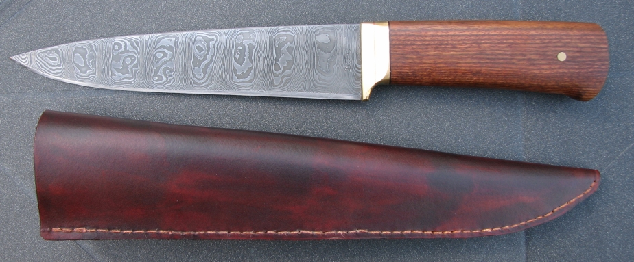

A Persian Kard style knife
October 2007
This knife was finally finished in October 2007. I'm not sure when I started it, because I found the billet in my garage before I went to Jack's hammerin in May. I'm pretty sure it is 36 layers of 15n20 and CS70. I rough forged it in my coke forge at Jack's, then ground grooves into the rough blade shape to get the ladder pattern.
I then forged it nearly to shape, and started grinding. I realized that I was going to lose too many layers if I just ground it to shape, so I took a chance and forged it even thinner, and this is the result.
The guard is soldered brass and copper, with a black leather spacer and the handle is Honduras walnut. The blade is 6 3/4 inches long.
  